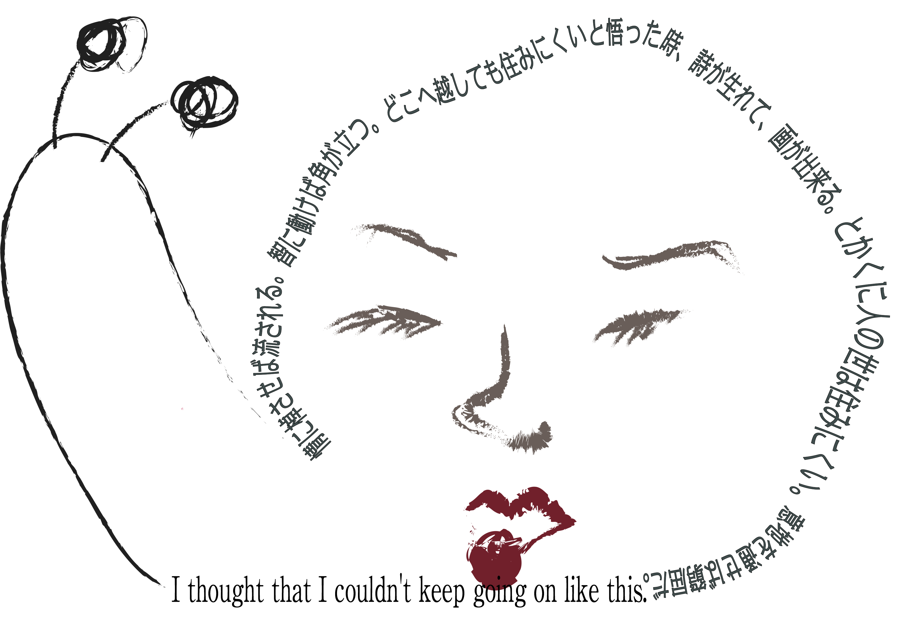

昔は子どもたちが自由に全身運動遊びが出来るよう開放されていた公園も、住宅環境の変化もあり、遊びの種類(野球やサッカーなど)も制限されるような現状がある。
そうなることによって子ども達は必然的に、SNSやネット、ゲームの中で会話をするほかに、帰宅後のコミュニケーションをとる機会が少なくなってしまう。
理知的でいようとすると人間関係に角が立って生活が穏やかでなくなり、情を重んじれば、どこまでも感情にひきずられてしまう。
↑夏目漱石の草枕から
女の子なのになぜマサル「スマホじゃなくて、サッカーしなさい。」「インターネットじゃなくて、勉強よ。」インターネットから離れるように促す言葉を、主におとなが子どもに向けて言う。 しかし実際、子どもたちの遊びの範囲をおとなたちが、時代とともに狭めて来ている気がする。 例えば住宅地にある公園だと、野球やサッカーなどの球技、花火など夏の風物詩も、安全を配慮して禁止されてしまう。

子どもたちが遊ぶ環境をここまで窮屈にしてしまったのは、決して時代だけのせいではない。
インターネットが世間に浸透するなか、人々の視野が狭まってきてしまった可能性もある。 不満をぶつける対象が直接人間ではなく、ネットに移動したことで、個々それぞれの価値観を混乱させてしまっていると考えた。
本来人間は、自由に生きる生き物である。 それぞれ個々が自由のなかで、生きる楽しさを見出す。
自由を尊重してきた私たちは、このままインターネットと共に歩いていくべきなのか。この時代だからこそ、ネットから離れるという考えがもっとあってもいいのではないかと思った。